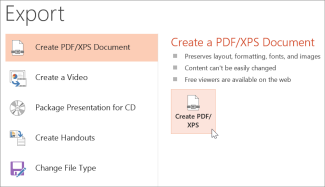

When you save presentation as a PDF file it freezes the formatting and layout. People can view the slides even if they don’t have PowerPoint, but they can’t make changes to it.
Select File > Export.

Click Create PDF/XPS Document, then click Create PDF/XPS.
In the Publish as PDF or XPS dialog box, choose a location to save the file to. If you want it to have a different name, enter it in the File name box.
Optionally, if you want to change what the final PDF file is like, do any of the following:
At Optimize for, select Standard for higher quality (for example, if you want to print it). Select Minimum size to make the file smaller (for example, if you want to send it as an e-mail attachment).
Click Options to set how the presentation will appear as a PDF. Here are some of the available options:
To save the current slide only as a PDF, under Range, select Current slide.
To save specific slides as PDF, in Slides(s), enter the slide number range in From and To boxes.
If you don't want to save slides, but instead only save comments, handouts, or Outline view, under Publish what, select an appropriate option. You can also specify the number of slides to appear in Slides per page dropdown box, and modify the order (Horizontal or Vertical).
You can choose to include frame slides, hidden slides, comments, ink, non-printing information such as Document properties or Document structure tags, in your PDF by selecting the appropriate options.
Click OK.
Click Publish.